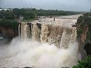

Tourist Guide
gokak falls

The Gokak Falls is a waterfall located on the Ghataprabha River in Belagavi district of Karnataka, India. The waterfall is six kilometers away from Gokak town.
After a long winding course, the Ghataprabha river takes a leap of 52 metres (171 ft) over the sand-stone cliff amidst a picturesque gorge of the rugged valley, resembling Niagara Falls on a smaller scale. The waterfall is horse shoe shaped at the crest, with a flood breadth of 177 metres (581 ft). During rainy season, the thick reddish brown water sweeps far over the brink of the cliff with a dull roar that can be heard from some distance. There is a hanging bridge across the river, measuring about 201 metres (659 ft). Its height above the rock bed is 14 metres (46 ft). There is an old electricity generation station and electricity was generated here for the first time in 1887
One interesting feature of this place is the monuments from the Chalukya era that are found on either bank of the rocky gorge. Another attraction of this place is the very old river-front temple dedicated to Lord Mahalingeshwara, built in the Later Chalukya style of architecture.